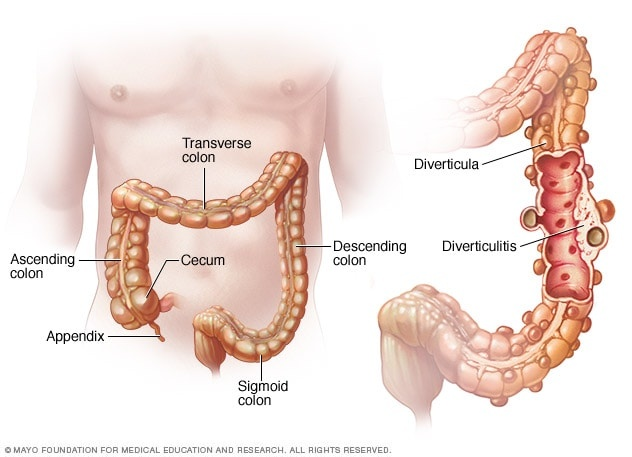

Diverticulitis

SYMPTOMS:
The signs and symptoms of diverticulitis include:
- Pain, which may be constant and persist for several days. The lower left side of the abdomen is the usual site of the pain. Sometimes, however, the right side of the abdomen is more painful, especially in people of Asian descent.
-
Nausea and vomiting.
-
Fever.
-
Abdominal tenderness.
-
Constipation or, less commonly, diarrhea.
CAUSES
- Diverticula usually develop when naturally weak places in your colon give way under pressure. This causes marble-sized pouches to protrude through the colon wall.
-
Diverticulitis occurs when diverticula tear, resulting in inflammation, and in some cases, infection.